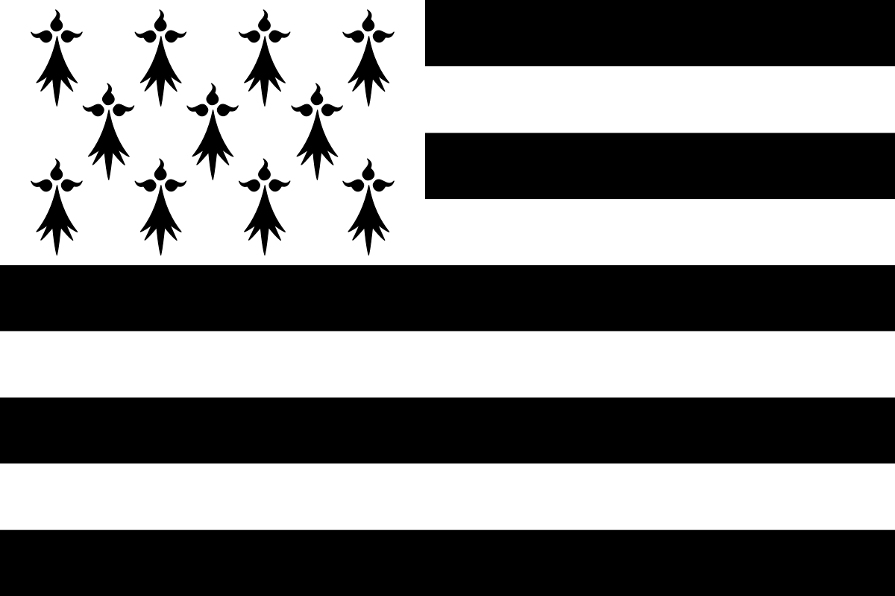

Brittany is a geographical and cultural entity. It occupies a peninsula in the far west of France, located between the Channel to the north, the Celtic Sea and the Iroise Sea to the west and the Bay of Biscay to the south.
At the end of the Roman Empire, it experienced an influx of population due to massive immigration1,2 of island Bretons in part of the ancient Armorica Gallic. These create a kingdom3 in the ninth century, which then becomes a duchy4 dependent on the kingdom of France. Meeting at the crown of France in 1532, she joined the royal domain and became a French province, until its administrative disappearance in 1790 and its division into five departments: Côtes-du-Nord, Finistere, Ille-et-Vilaine, Loire -Inferior and Morbihan.
Its inhabitants are the Bretons, whether we are talking about the historic region or the current administrative region. Its Breton name, Breizh (without article, pronounced / brɛjs / in Breton KLT, / brɛχ / in Breton vannetais), is spelled with a "ZH" to gather the old writing existing for North and West (Breiz) with that of the South (Breih). The word "Brittany", since the Breton word "Breizh", is thus commonly abbreviated as "BZH". In Gallo, the other language of Brittany (besides French), its name is Bertègn (in the Aneit system), Bertaèyn (ELG system) or B-rtingn (dominant in Ille-et-Vilaine MOGA system) 5.
The Brittany appellation also refers to a French region, made up of four departments. The department of Loire-Atlantique is currently attached to the Pays de la Loire region; the question of its reunification with the Brittany region is the subject of debate.
More specifically around ka town of Carnac located in Morbihan. The city where I spend my child, and a large majority of my holidays.
other website link are located on the tab To Eat - Galettes